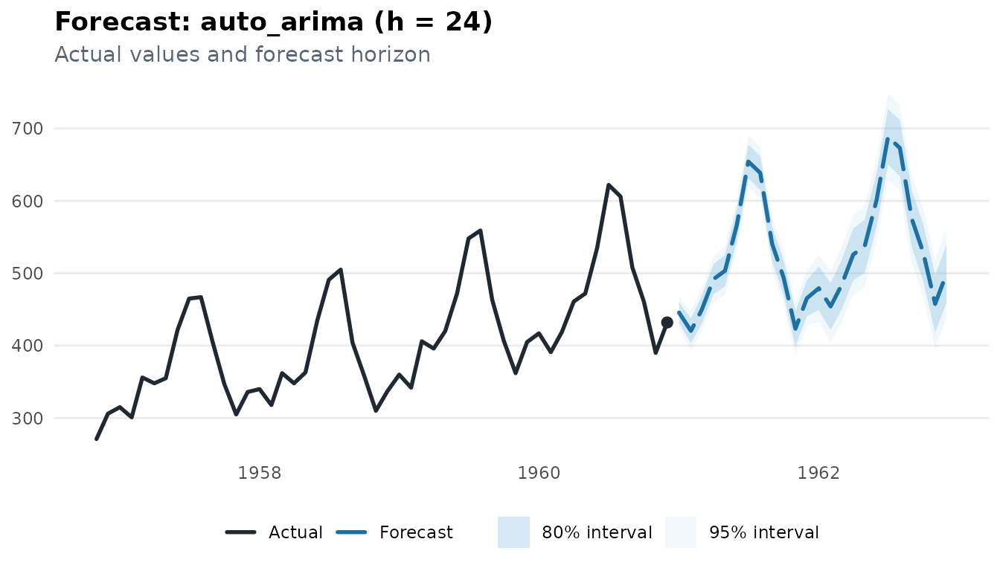
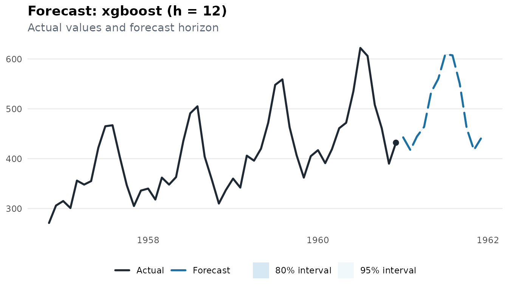
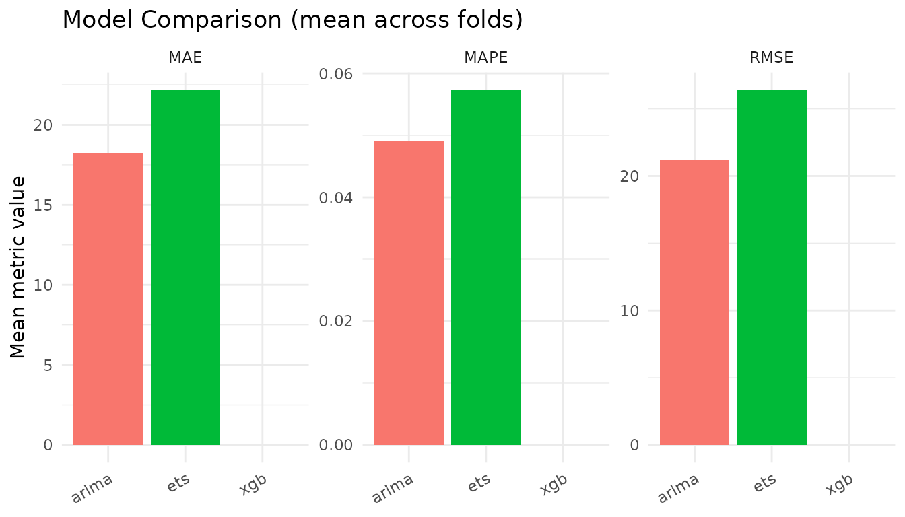
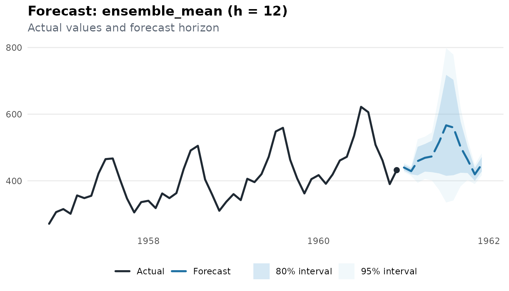
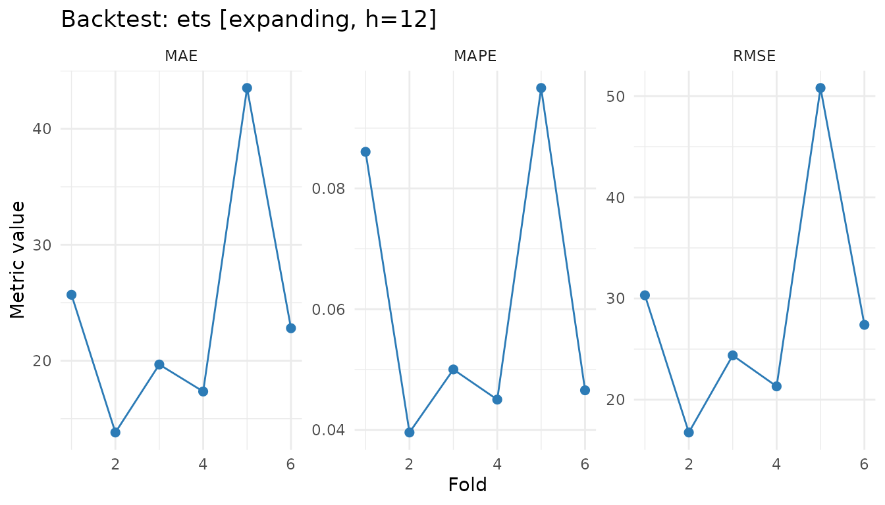

library(milt)
#> milt 0.1.0 — Modern Integrated Library for Timeseries
#> Use `list_milt_models()` to see available models.Overview
This vignette walks through milt’s full forecasting model zoo — from classical statistical models to machine learning and ensembles — using a single consistent API.
milt_model("<name>") |> milt_fit(series) |> milt_forecast(horizon = 12)1. The model zoo
List every registered model:
list_milt_models()
#> # A tibble: 25 × 6
#> name description multivariate probabilistic covariates multi_series
#> <chr> <chr> <lgl> <lgl> <lgl> <lgl>
#> 1 snaive "Seasonal … FALSE TRUE FALSE FALSE
#> 2 ets "Exponenti… FALSE TRUE FALSE FALSE
#> 3 nbeats "" FALSE FALSE FALSE FALSE
#> 4 auto_arima "Automatic… FALSE TRUE TRUE FALSE
#> 5 knn "K-Nearest… FALSE TRUE FALSE FALSE
#> 6 svm "Support V… FALSE TRUE FALSE FALSE
#> 7 stl "STL decom… FALSE TRUE FALSE FALSE
#> 8 elastic_net "" FALSE FALSE FALSE FALSE
#> 9 deepar "" FALSE FALSE FALSE FALSE
#> 10 darts_transfo… "" FALSE FALSE FALSE FALSE
#> # ℹ 15 more rows2. Classical models
air <- milt_series(AirPassengers)
# Auto-ARIMA
fct_arima <- milt_model("auto_arima") |> milt_fit(air) |> milt_forecast(24)
#> Fitting <MiltAutoArima> model…
#> Done in 1.29s.
plot(fct_arima)
# ETS
fct_ets <- milt_model("ets") |> milt_fit(air) |> milt_forecast(24)
#> Fitting <MiltEts> model…
#> Done in 0.62s.
plot(fct_ets)
3. Train/test evaluation
spl <- milt_split(air, ratio = 0.8)
h <- spl$test$n_timesteps()
fct_cv <- milt_model("ets") |>
milt_fit(spl$train) |>
milt_forecast(h)
#> Fitting <MiltEts> model…
#> Done in 0.58s.
milt_accuracy(spl$test$values(), fct_cv$as_tibble()$.mean)
#> # A tibble: 5 × 2
#> metric value
#> <chr> <dbl>
#> 1 MAE 30.0
#> 2 MSE 1282.
#> 3 RMSE 35.8
#> 4 MAPE 0.0653
#> 5 R2 0.7904. ML models with lag features
XGBoost, LightGBM, random forest, and elastic net all use automatic lag features. You can customise the lags:
fct_xgb <- milt_model("xgboost", lags = 1:12) |>
milt_fit(air) |>
milt_forecast(12)
#> Fitting <MiltXGBoost> model…
#> Done in 0.05s.
plot(fct_xgb)
5. Model comparison
milt_compare() runs a rolling-origin backtest on each
model and ranks them:
models <- list(
arima = milt_model("auto_arima"),
ets = milt_model("ets"),
xgb = milt_model("xgboost", lags = 1:12)
)
cmp <- milt_compare(models, air, horizon = 12)
#> Comparing 3 models: arima, ets, xgb
#> Running backtest for "arima"...
#> Running expanding backtest (61 folds): auto_arima, h=12
#> Running backtest for "ets"...
#> Running expanding backtest (61 folds): ets, h=12
#> Running backtest for "xgb"...
#> Running expanding backtest (61 folds): xgboost, h=12
#> Warning: Fold 1 failed: attempt to apply non-function
#> Warning: Fold 2 failed: attempt to apply non-function
#> Warning: Fold 3 failed: attempt to apply non-function
#> Warning: Fold 4 failed: attempt to apply non-function
#> Warning: Fold 5 failed: attempt to apply non-function
#> Warning: Fold 6 failed: attempt to apply non-function
#> Warning: Fold 7 failed: attempt to apply non-function
#> Warning: Fold 8 failed: attempt to apply non-function
#> Warning: Fold 9 failed: attempt to apply non-function
#> Warning: Fold 10 failed: attempt to apply non-function
#> Warning: Fold 11 failed: attempt to apply non-function
#> Warning: Fold 12 failed: attempt to apply non-function
#> Warning: Fold 13 failed: attempt to apply non-function
#> Warning: Fold 14 failed: attempt to apply non-function
#> Warning: Fold 15 failed: attempt to apply non-function
#> Warning: Fold 16 failed: attempt to apply non-function
#> Warning: Fold 17 failed: attempt to apply non-function
#> Warning: Fold 18 failed: attempt to apply non-function
#> Warning: Fold 19 failed: attempt to apply non-function
#> Warning: Fold 20 failed: attempt to apply non-function
#> Warning: Fold 21 failed: attempt to apply non-function
#> Warning: Fold 22 failed: attempt to apply non-function
#> Warning: Fold 23 failed: attempt to apply non-function
#> Warning: Fold 24 failed: attempt to apply non-function
#> Warning: Fold 25 failed: attempt to apply non-function
#> Warning: Fold 26 failed: attempt to apply non-function
#> Warning: Fold 27 failed: attempt to apply non-function
#> Warning: Fold 28 failed: attempt to apply non-function
#> Warning: Fold 29 failed: attempt to apply non-function
#> Warning: Fold 30 failed: attempt to apply non-function
#> Warning: Fold 31 failed: attempt to apply non-function
#> Warning: Fold 32 failed: attempt to apply non-function
#> Warning: Fold 33 failed: attempt to apply non-function
#> Warning: Fold 34 failed: attempt to apply non-function
#> Warning: Fold 35 failed: attempt to apply non-function
#> Warning: Fold 36 failed: attempt to apply non-function
#> Warning: Fold 37 failed: attempt to apply non-function
#> Warning: Fold 38 failed: attempt to apply non-function
#> Warning: Fold 39 failed: attempt to apply non-function
#> Warning: Fold 40 failed: attempt to apply non-function
#> Warning: Fold 41 failed: attempt to apply non-function
#> Warning: Fold 42 failed: attempt to apply non-function
#> Warning: Fold 43 failed: attempt to apply non-function
#> Warning: Fold 44 failed: attempt to apply non-function
#> Warning: Fold 45 failed: attempt to apply non-function
#> Warning: Fold 46 failed: attempt to apply non-function
#> Warning: Fold 47 failed: attempt to apply non-function
#> Warning: Fold 48 failed: attempt to apply non-function
#> Warning: Fold 49 failed: attempt to apply non-function
#> Warning: Fold 50 failed: attempt to apply non-function
#> Warning: Fold 51 failed: attempt to apply non-function
#> Warning: Fold 52 failed: attempt to apply non-function
#> Warning: Fold 53 failed: attempt to apply non-function
#> Warning: Fold 54 failed: attempt to apply non-function
#> Warning: Fold 55 failed: attempt to apply non-function
#> Warning: Fold 56 failed: attempt to apply non-function
#> Warning: Fold 57 failed: attempt to apply non-function
#> Warning: Fold 58 failed: attempt to apply non-function
#> Warning: Fold 59 failed: attempt to apply non-function
#> Warning: Fold 60 failed: attempt to apply non-function
#> Warning: Fold 61 failed: attempt to apply non-function
print(cmp)
#>
#> ── MiltComparison - 3 models ──
#>
#> • Rank metric : MAE
#> • Models : arima, ets, xgb
#>
#> ── Ranked by MAE (mean across folds)
#> Warning in min(x, na.rm = TRUE): no non-missing arguments to min; returning Inf
#> Warning in max(x, na.rm = TRUE): no non-missing arguments to max; returning
#> -Inf
#> Warning in min(x, na.rm = TRUE): no non-missing arguments to min; returning Inf
#> Warning in max(x, na.rm = TRUE): no non-missing arguments to max; returning
#> -Inf
#> Warning in min(x, na.rm = TRUE): no non-missing arguments to min; returning Inf
#> Warning in max(x, na.rm = TRUE): no non-missing arguments to max; returning
#> -Inf
#> # A tibble: 3 × 5
#> model MAE RMSE MAPE rank
#> <chr> <dbl> <dbl> <dbl> <int>
#> 1 arima 18.3 21.2 0.0491 1
#> 2 ets 22.2 26.4 0.0573 2
#> 3 xgb NaN NaN NaN 3
plot(cmp)
#> Warning: Removed 3 rows containing missing values or values outside the scale range
#> (`geom_col()`).
6. Ensemble models
Combine forecasts with a mean ensemble:
m1 <- milt_model("auto_arima") |> milt_fit(air)
#> Fitting <MiltAutoArima> model…
#> Done in 1.23s.
m2 <- milt_model("ets") |> milt_fit(air)
#> Fitting <MiltEts> model…
#> Done in 0.63s.
m3 <- milt_model("naive") |> milt_fit(air)
#> Fitting <MiltNaive> model…
#> Done in 0s.
ens <- milt_ensemble(list(arima = m1, ets = m2, naive = m3), method = "mean")
fct_ens <- milt_forecast(ens, 12)
plot(fct_ens)
7. Probabilistic forecasts
Every model returns 80% and 95% prediction intervals. Access them via
as_tibble():
tbl <- fct_arima$as_tibble()
head(tbl)
#> # A tibble: 6 × 7
#> time .model .mean .lower_80 .upper_80 .lower_95 .upper_95
#> <date> <chr> <dbl> <dbl> <dbl> <dbl> <dbl>
#> 1 1961-01-01 auto_arima 446. 431. 460. 423. 468.
#> 2 1961-02-01 auto_arima 420. 403. 438. 394. 447.
#> 3 1961-03-01 auto_arima 449. 430. 469. 419. 479.
#> 4 1961-04-01 auto_arima 492. 471. 513. 460. 524.
#> 5 1961-05-01 auto_arima 503. 482. 525. 470. 537.
#> 6 1961-06-01 auto_arima 567. 544. 589. 532. 601.For sample-path–based probabilistic forecasts, use
num_samples:
fct_samples <- milt_model("naive") |>
milt_fit(air) |>
milt_forecast(12, num_samples = 200)8. Backtesting
milt_backtest() implements expanding- and sliding-window
CV:
bt <- milt_backtest(
milt_model("ets"),
series = air,
horizon = 12,
stride = 12,
method = "expanding"
)
#> Running expanding backtest (6 folds): ets, h=12
print(bt)
#>
#> ── MiltBacktest <ets> ──
#>
#> • Method : expanding
#> • Horizon : 12
#> • Folds : 6
#>
#> ── Summary (across folds)
#> # A tibble: 3 × 5
#> metric mean sd min max
#> <chr> <dbl> <dbl> <dbl> <dbl>
#> 1 MAE 23.8 10.5 13.8 43.5
#> 2 RMSE 28.5 11.9 16.8 50.8
#> 3 MAPE 0.0606 0.0243 0.0396 0.0967
plot(bt)